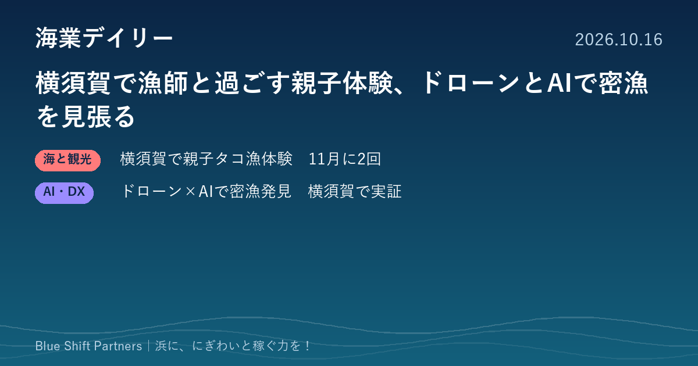

2026.10.16
横須賀で漁師と過ごす親子体験、ドローンとAIで密漁を見張る

神奈川県横須賀市の新安浦漁港で、若手漁師とタコ漁を体験する親子向けモニターツアーの参加者募集が始まりました。同じ横須賀の沿岸では、大学・高校・海上保安部・市が組んだドローンとAIによる密漁監視の実証で成果が出ています。首都圏の浜から、稼ぐ取り組みと浜を守る取り組みをお伝えします。
横須賀・新安浦漁港で若手漁師とタコ漁を体験する親子モニターツアー、参加者を募集
株式会社雨風太陽は10月13日、横須賀市の新安浦漁港を拠点に、小学生と保護者が若手漁師と1日を過ごすモニターツアーの参加者募集を始めました。「令和8年度横須賀港平成地区海業取組促進事業」の一環で、猿島沖でのたこつぼ漁の見学や乗船体験などを予定しています。開催は11月14日と11月28日（いずれも土曜日）の10時から16時、各回7名までで、料金は保護者1名と子ども1名で22,000円（税込）です。申込締切は第1回が11月9日、第2回が11月23日です。
ここがポイント：漁港を舞台にした体験を、料金を設定したツアーとして試し、参加者の反応を確かめる取り組みです。漁業体験の商品化を考える漁協や自治体にとって、価格や定員、所要時間の決め方の参考になります。
出典：STAY JAPAN（株式会社雨風太陽）「【日帰り親子体験】横須賀で若手漁師とタコ満喫の1日」（2026-10-13）
ドローンとAIで密漁者を発見、横須賀の産学官連携の実証で成果
関東学院大学は、横須賀市の沿岸で行った次世代型の密漁対策の実証実験で、密漁者の発見につながったと8月20日に公表しました。神奈川県立海洋科学高等学校の生徒が操縦するドローンが疑わしい人物を見つけ、同大学の元木誠教授が開発したAIが密漁の可能性が高いと判定しました。待機していた海上保安官が声をかけたところ、サザエやトコブシなどを採ったことを認めたとしています。実証は横須賀海上保安部と横須賀市も協力しており、ドローンとAIを組み合わせた監視の有効性が確認されたとしています。
ここがポイント：広い海岸線の見回りは人手に頼る部分が大きく、漁協や自治体の負担になっています。ドローンとAIの組み合わせは、少ない人手で浜の資源を守る手段として、各地の密漁対策の参考になります。
出典：関東学院大学「AIが密漁を見抜く！～次世代型密漁対策実証実験で密漁者を発見～」（大学プレスセンター）（2026-08-20）
浜の資源は、漁で稼ぐ力の土台であると同時に、体験や観光で人を呼ぶ魅力にもなります。体験で浜のファンを増やす取り組みと、新しい技術で資源を守る取り組みを両輪で進めることが、浜の稼ぐ力を長く保つ近道です。